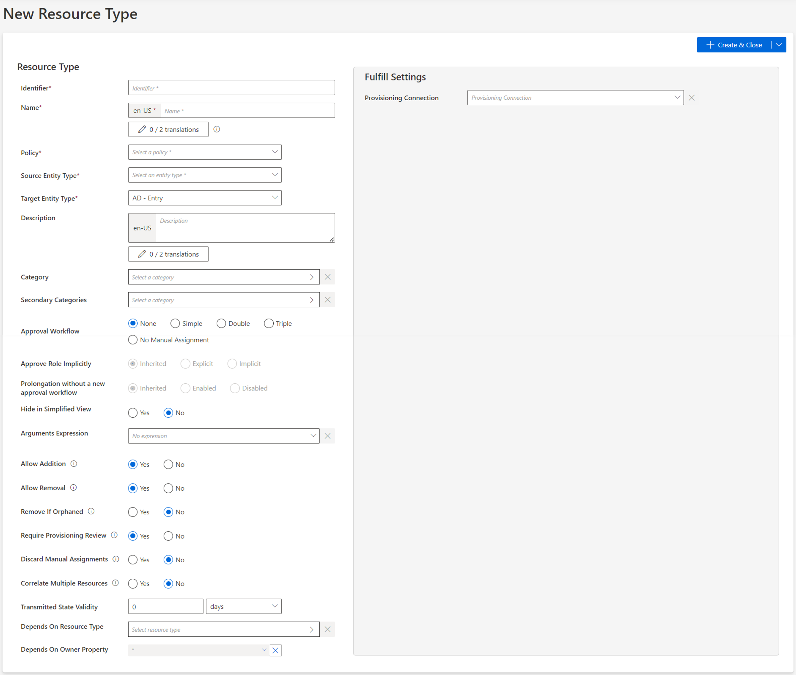
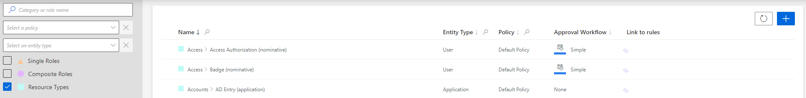

Create a Resource Type
How to create the container for future correlation and classification rules inside a given managed system.
Overview
A Resource Type is created to highlight differences in intent between resources. It materializes the organization's profiles. In a given managed system, different types of resources have different security needs.
For example, can usually be found:
- nominative accounts for basic user accounts with low privileges;
- administrator accounts for accounts with higher privileges, on several administration entitlements levels;
- generic accounts, i.e. shared by a group of users (often for testing use);
- old in opposition to new accounts because of potentially evolving naming conventions;
- service accounts owned by applications instead of users.
In practice, a specific resource type is created for a given resource when there are differences in:
- the owner type (for example worker, partner, customer, application, robot, etc.);
- the required set of classification and/or correlation rules; See the Classify Resources , and Correlate Resources topics for additional information.
- the approval circuit for a resource's modification or assignment, i.e. the number of required approvals, validators, etc.;
- the type of provisioning (manual or automatic). See the Provision topic for additional information.
Source vs. target resource
Resource types are the vessel for ownership relationships. They involve the definition of source and target objects chosen from among the properties of existing entity types. The source (usually identities) is the owner of the target (usually resources from your managed systems, such as a nominative AD account). This relationship is the basis for correlation as much as for future provisioning. See the Create an Entity Type, Correlate Resources , andProvision topics for additional information.
See the Entitlement Management topic for additional information.
Participants and Artifacts
For a given managed system, integrators may need the help of the application owner who knows the application users, entitlements and data model.
| Input | Output |
|---|---|
| Identity repository (optional) Target connector (required) Synchronized data (optional) |
Resource type |
See the Create the Workforce Repository Connect to a Managed System , and Synchronize Data topics for additional information.
Create a Resource Type
A new resource type requires an existing entity type. See the Create an Entity Type topic for additional information.
Create a resource type by proceeding as follows:
-
On the relevant connector page, click on the addition button in the Resource Types frame.

Resource types can also be created through the Access Roles screen (accessible from the home page, in the Configuration section), using the + New button and selecting
Resource Typein the first field calledType.
-
Fill in the fields.

-
Identifier: must be unique among resource types, without any whitespace, and be C#-compatible. See Microsoft lexical structure. -
Name: will be displayed in the UI to identify the resource type. -
Policy: policy in which the resource type exists. -
Source Entity Type: entity type (from any existing connector) used to fill the target entity type. -
Target Entity Type: entity type (part of the connector) to be filled with the source entity type. -
Category: category assigned to the resource type. It can be chosen from among the existing categories or created directly from the categories list by clicking on the + Category button. -
Approval Workflow: represents the number of validations required to assign a resource from this type to an identity. -
Approve Role Implicitly: relevant only for workflows with at least a simple approval process.Implicitmode bypasses the approval step(s) if the person who issues the role request is also the role officer.Explicitrefuses said bypass.Inheritedfollows the policy decision to approve role implicitly or not. See the Create a Policy topic for additional information. -
Prolongation without a new approval workflow: enables the resource type to have its assignment's end date postponed without any validation.Inheritedfollows the policy decision to enable this option or not. See the Create a Policy topic for additional information. -
Hide in Simplified View: hides the role from the users' Simplified View in View Permissions dialog. This setting does not apply to roles which are either inferred or have workflow states which require manual action. -
Arguments Expression: when using a connection for automatic provisioning, C# expression used to compute a dictionary of strings in order to compute the arguments of provisioning orders, such as the identifier of the workflow to launch within Identity Manager, or the identifier of the user's record to copy. See the Provision topic for additional information. -
Allow Addition: enables Identity Manager to automatically create new resources in the managed system when their owners are given the right entitlements. Otherwise, resource managers must create resources manually directly in the managed system.Consider a role
SAPwhich assigns an SAP account to a user. Consider also that SAP accounts are configured withAllow Additiondisabled. In this case, if we give the roleSAPto a user, then said user doesn't automatically receive an SAP account. The relevant resource manager must create an account for said user in the SAP application. -
Allow Removal: enables Identity Manager to automatically deprovision resources in the managed system when their owners are deprived of the right entitlements. Otherwise, Identity Manager is able to delete resources in the managed system only with a manual approval on the Resource Reconciliation screen.Consider a role
SAPwhich assigns an SAP account to a user. Consider also that SAP accounts are configured withAllow Removaldisabled. Finally, consider a given user who has the roleSAPand the corresponding SAP account. In this case, if we deprive said user from the roleSAP, then the SAP account isn't automatically deleted. Identity Manager displays this assignment as non-conforming on the Resource Reconciliation page, and the relevant resource manager must confirm the account deletion.Allow Addition / Allow Removal:
These options set toNoare interesting especially in testing mode when the role model isn't entirely reliable yet. -
Remove If Orphaned: enables Identity Manager to automatically deprovision resources when their owner is deleted. Otherwise, said resources are displayed on the Resource Reconciliation screen. Can be activated only ifAllow Removalis activated too. -
Require Provisioning Review: forces an additional mandatory review of all provisioning orders for the resource type (on the Review Provisioning screen).Consider AD accounts. While nominative accounts can be provisioned without specific precautions (option set to
No), administrator accounts sometimes require an additional review (option set toYes).This option can be bypassed when computing the role model by clicking on the Compute Role Model, no provisioning review job in the Resource Type frame on the connector's overview page.
-
Discard Manual Assignments: allows the provisioning of a new value computed by a provisioning rule for a property, based on a change in the source data, no matter the property's current workflow state.Set to
No, any manual change of a property's value made directly in the target system will be "protected" (only after the change is approved in Identity Manager in Resource Reconciliation). It means that a future change in the source data will not trigger the provisioning of the new value. Instead, Identity Manager will keep the value of the manual change, and state the value asQuestioned.Consider an HR system (source) whose data isn't often synchronized into Identity Manager. Let's say that a user marries and changes their name. In this case, the value in Identity Manager needs to be updated (via workflows) so that all managed systems are updated too with the new name. However,
Discard Manual Assignmentsshould be enabled because the HR system should still be the authoritative source in case of another change. -
Correlate Multiple Resources: enables Identity Manager to link a single owner to several existing target objects from this resource type.Consider records, representing users' positions in the resource type
User Record (from HR). In some organizations, one user can have several records at once, or have several records that overlap, and these records can be created either via Identity Manager's workflows or via the upload of an HR file. Thus, on the one hand it is complex to anticipate the number of records created for an identity, on the other hand there shouldn't be records without an owner. In other words, when creating a new record via a workflow, we want the record to be linked to the right user, whether or not a record is already linked to the user's HR sheet. Therefore, the correlation of multiple resources (of the same resource type) to a single owner should be permitted. -
Transmitted State Validity: The period in minutes during which fulfillment orders can stay in Transmitted/Executed state. When the time is exceeded the orders are set in error state. -
Depends On Resource Type: potential resource type (other than the one presently created) which must be provisioned for a given identity before this resource type can be created for said identity.This option can be used so that a user must have an AD account before they can own an Exchange account, because the Exchange account needs the AD account's address.
-
Depends On Owner Property: potential properties which must be filled for a given identity before this resource type can be created for said identity.This option can be used so that a user must have a ServiceNow identifier before they can own an AD administrator account, because the AD administrator account needs this random identifier computed by ServiceNow in order to be able to perform manual provisioning in ServiceNow.
-
-
Fill the Fulfill Settings arguments according to the selected package.
Integrators need to know the required provisioning connection, especially whether the connection is about manual or automated provisioning. Automatic provisioning means that Identity Manager writes in the managed system. Manual provisioning means that Identity Manager isn't allowed to write directly inside the managed system, and thus it creates tickets so that resource managers perform the needed changes.
-
Click on + Create & Close > Create.
Verify Resource Type Creation
In order to verify the process, check that the resource type has been added with the right options to the list on the Access Roles page, accessible from the home page in the Administration section.
